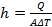

International Journal of Mechanical Engineering and Mechatronics (IJMEM)
ISSN: 1929-2724

Volume 1, Issue 2 Year 2012 - Pages 109-121
DOI: 10.11159/ijmem.2012.014
Numerical Simulation of Performance Augmentation in a Plate Fin Heat Exchanger Using Winglet Type Vortex Generators
Amin Ebrahimi¹, Saeid Kheradmand²
¹Department of Mechanical Engineering, Ferdowsi University of Mashhad
Mashhad, Iran
ebrahimi.amin@gmail.com
²Department of Mechanical Engineering, Isfahan University
Isfahan, Iran
saeid_kheradmand@yahoo.com
Abstract - A detailed evaluation of the performance parameters in the laminar flow regime with regard to the enhancement of heat transfer using winglet type vortex generators has been accomplished in this study. Three dimensional numerical studies of flow structure and laminar convectionheat transfer are performed in a plate fin heat exchanger with longitudinal vortex generators (LVGs) in present paper. The Effects of common flow up and common flow down pairs of vortices produced by LVGs with two different shapes of the winglets, a pair of rectangular winglet (RWP) and a pair of delta winglet (DWP), are studied at various Reynolds numbers. The results show that effect of LVGs could effectively enhance the heat transfer of the heat exchanger. According to the non-dimensional defined parameter for evaluation of performance, (Num/Num,0)/(f/f0), the channel with DWP shows better overall performance than RWP. The common flow down configuration of DWP shows a better overall performance at Reynolds numbers lower than 720 and common flow up configuration of DWP shows a better overall performance at Reynolds numbers more than 720; also, the common flow down configuration shows a better overall performance than the common flow up configuration for RWP.
Keywords: Plate Fin Heat Exchanger, Vortex Generator, Winglet Pair, Enhanced Heat Transfer, Laminar Flow.
© Copyright 2015 Authors This is an Open Access article published under the Creative Commons Attribution License terms. Unrestricted use, distribution, and reproduction in any medium are permitted, provided the original work is properly cited.
Nomenclature
- a: minimum transverse distance between winglet pair, m
- A: Heat transfer area or cross-sectional area, m2
- cp: specific heat, J/(kg K)
- Cp: pressure coefficient
- f: friction factor
- h: heat transfer coefficient, W/(m2K) or height of vortex generator, m
- H: channel height, m
- k: thermal conductivity, W/(m K)
- l: chord length of vortex generator, m
- L: channel length, m
- Nu: Nusselt nember
- p: pressure, Pa
- q: heat flux, W/m2
- Q: heat transfer capacity, W
- Re: Reynolds number
- T: temperature, K
- U: velocity vector
- W: channel width, m
- s: distance between the trailing edge of the winglet and the entry of the channel, m
- x,y,z: Cartesian coordinate
Greek symbols
- β: attack angle of the winglet, degree
- ν: kinematic viscosity, m2s
- ρ: density, kg/m3
- Γ: circulation of cross section, m2/s
Subscripts
- 0: flat plate
- app : apparent
- in : inlet
- m : mean
- out : outlet
- w : wall
1. Introduction
The compact heat exchangers are widely employed in heating, warming and cooling applications in such fields as automobile industries, chemical engineering, power system, aerospace, air conditioning, and electronic chip cooling, etc.
The subject of heat transfer enhancement have attracted many researchers for a long time to develop more compact and low cost heat exchangers with high efficiency and the weight as light as possible. It is well known that the thermal resistance of gas is generally much higher than the other contributions. Hence, Efforts to improve refrigerant to air heat exchanger performance should focus on reducing the dominant thermal resistance on the air side of the heat exchanger.
Different methods are used for heat transfer augmentation in thermal systems. Active (require external power) and passive (no need to external power) methods are two groups for this goal (Webb, 1994 and Jacobi and Shah, 1995). In the two past decades, considerable researches have been focused on impact of the passive generation of longitudinal vortices on the heat transfer enhancement. Due to pressure difference between two sides of vortex generator, the flow along the side edges separates and generates vortices. Transverse, longitudinal and horseshoe vortices can generate by vortex generators. As described by Fiebig (1995), when angel of attack of VGs is small, generates vortices are mainly longitudinal, and when VGs are perpendicular to the flow direction, generates vortices are mainly transverse. When longitudinal vortex generators (LVGs) used near a heat transfer surface, generated vortices due to presence of LVGs distorted the temperature field in the channel and they increase the heat transfer between the fluid and its neighbouring surfaces by transporting fluid from the wall into the free stream and vice versa.
The first report on boundary layer control to delay boundary layer separation on aircraft wings by using longitudinal vortices was presented in 1960 by Schubauer and Spangenberg (1960). The influence of vortex generators on the heat transfer performance was studied by Jonhnson and Joubert (1969). Since then, considerable researches focused on the use of LVGs to enhance heat transfer performance.
Delta and cube winglet are studied by Edwards and Alker (1974) and they showed better overall performance of delta winglets. On the other hand Local distribution of heat transfer is studied by Katoaka et al. (1977). Velocity and temperature distributions are studied and reported by Fiebig et al. (1989). Fiebig et al. (1991) showed that local heat transfer with winglet could be three times larger than channel flow without winglet in laminar regime. In another experimental research Fiebig et al. studied various types of wing and winglets.
Zhu et al. (1995) numerically investigated the heat transfer and turbulent flow in a rectangular channel with rectangular winglets on one wall and rib-roughness elements on the other wall. Results showed that the combined effect of rib-roughness and vortex generators could increase the average Nusselt number about 450%.
Deb et al. (1995) numerically studied heat transfer and flow structure in laminar and turbulent flows in a rectangular channel with built-in delta winglets. Biswas et al. (1996) carried out numerical and experimental studies of flow structure and heat transfer effects of longitudinal vortices behind a delta winglet placed in a laminar channel flow. They observed that Presence of delta winglet will cause produce a main vortex, a corner vortex and an induced vortex. Also, they define a parameter for evaluation of performance quality which indicates heat transfer augmentation for a given pressure loss penalty.
Lee et al. (1999) numerically studied heat transfer characteristics and structure of turbulence in a three-dimensional turbulent boundary layer with delta wing LVGs. They found that longitudinal vortices are capable of disturbing the turbulent and thermal boundary layer, which caused anisotropy of turbulent intensity and the best heat transfer enhancement in the region where the flows are directed toward the wall but the vortex core is the region of relatively lower mixing.
Lau et al. (1999) measured temperature and instantaneous velocity vector of the turbulent channel flow with embedded longitudinal vortices using quadruple hot-wire probes. Fluid Flow and heat transfer behind a vortex generators studied by Henze and Wolfersdorf (2011) experimentally at Reynolds number of 300000.
Liou et al. (2000) carried out experimental investigation on twelve different shaped vortex generators to study the heat transfer enhancement in a sharp turning two-pass square duct. They showed the importance of secondary flow characteristics and their effects on heat transfer.
Yang et al. (2001) numerically studied the effects of different attack angles of the delta winglet pair on flow field and heat transfer created by interactions between a pair of vortices generated by a vortex generator in a rectangular channel turbulent flow. Gentry and Jacobi (1997, 2002) experimentally explored the heat transfer enhancement in flat-plate flow and developing channel flows with built-in delta wings by a naphthalene sublimation technique. The results indicated that the average heat transfer could be increased by 50-60% at low Reynolds number conditions in comparison with the same channel flow with no delta-wing vortex generator.
Sohankar and Davidson (2003) carried out unsteady three-dimensional DNS and LES simulations to investigate the flow and heat structures in a plate-fin heat exchanger with vortex generators. The thickness of the winglet is ignored in this study.
In a numerical study two types of winglets are compared by Ferrouillatet al. (2006). This study showed that the delta vortex generators were better than the rectangular vortex generators pair in terms of heat transfer and mixing.
Sohankar (2007) simulated three-dimensional unsteady flow and heat transfer using Direct Numerical Simulation (DNS) and Large Eddy Simulation (LES) for a channel with two angled finite thickness ribs as a vee-shaped vortex generator to augment heat transfer.
Hiravennavar et al. (2007) performed a numerical simulation to investigate the unsteady, laminar,three-dimensionalflow structure and heat-transfer enhancement by a delta winglet pair at various Reynolds numbers and winglet thicknesses.
Yang et al. (2008) studied the effects of winglet with common flow up configuration on heat transfer and flow in turbulent regime.
A modified rectangular longitudinal vortex generator (LVG) is presented and studied by Min et al. (2010). This modified wing performs better than original wing.
Winglets are also used in micro channels in order to improve heat transfer for liquid flow by Liu et al. (2011). They found that the range of critical Reynolds numbers were at a much smaller value by adding winglets than the one without; heat transfer performance was improved (9-21% higher for those with laminar flow and 39-90% for those with turbulent flow).
Winglet various attack angles are experimentally and numerically studied by Wu and Tao (2012). The results showed that the average Nusselt number on the surfaces of plate increases with the increase of the attack angle.
He et al. (2012) numerically studied the potential of punched winglet type vortex generator arrays to augment heat transfer performance of finned tube heat exchanger. They reported 34-81% enhancement in heat transfer coefficient accompanied by 43-136% pressure drop penalty.
Heat transfer augmentation of a plate-fin heat exchanger equipped with two rows of winglet type vortex generators with five different strategic placements of the VG numerically investigated by Sinha et al. (2013). The Reynolds number which they studied was varied in the range of 250–1580.
Effects of the different winglets shapes and configurations on the heat transfer augmentation at various Reynolds numbers are presented in this paper.
2. Model Descriptions
2. 1. Geometric Configurations
Simulations are performed on a three-dimensional flat plate channel which is equipped by two neighbouring fins. Figure 1 shows the schematic diagram of the channel with LVGs used for simulations in which X, Y, Z are stream wise, normal, and span wise coordinates, respectively. The model adopted in this study includes a pair of winglets with a chord length (l) equal to channel height (H), the length of the channel (L) equals 25H, the aspect ratio of the channel (AR=W/H) equals 4.0, the height of the winglets (h) equals 0.5H. The distance between the trailing edge of the winglet and the entry of the channel(s) equals 2.707 H. The winglets are positioned such that the minimum transverse distance between the winglet pair (a) equals 0.5H. The angle of attack of the winglets is 45°. The winglet width equals 0.01H. The effects of two different shapes of winglet including delta winglet pair and rectangular winglet pair investigated in the present study.
Two different configurations of the LVGs attached on the bottom of the channel are considered in this study (Figure1). Due to symmetric arrangement, the computations are done in the shadow region in Figure 1.
2. 2. Governing Equations and Boundary Conditions
In this investigation, air is used as working fluid. The generation of longitudinal vortices is a quasi-steady phenomenon (S. Ferrouillat, 2006). Due to the low air velocity and the small fin pitch, the flow in the channel of heat exchanger is laminar. The flow and heat transfer computations are performed for a three-dimensional, steady and incompressible flow of air with constant physical properties. The governing equations for the fluid flow including continuity, momentum and energy equationsin non-dimensional form and standard tensor notation can be expressed as follows.
|
|
(1) |
|
|
(2) |
|
|
(3) |
Where ρ is fluid density (kg/m3); u is flow velocity (m/s); x is Cartesian coordinates (m); η is kinetic viscosity (kg/m s); p is static pressure (Pa); T is Temperature (K); k is thermal conductivity (W/m K); and cp is specific heat of fluid (J/ (kg K)).
The required boundary conditions for numerical simulation in this paper can be described as follows:
At the inlet boundary: u=uin=Constant, v=w=0, T=Tin=Constant.
At
the side boundaries of channel: w=0, 
At the top and bottom boundaries:
On the extended surface: v=0,
On the walls: u=v=w=0, T=Tw=Constant.
At the fin surfaces: u=v=w=0, T=Tw=Constant.
At the outlet boundary:
2. 3. Parameter Definitions
The Reynolds number (Re), average Nusselt number (Nu) and apparent friction coefficient (fappRe) are defined by the following equations:
|
|
(4) |
|
|
(5) |
|
|
(6) |
Where uin is the mean velocity at the channel inlet, ν kinematic viscosity, h heat transfer coefficient, Δp the pressure drop across computational domain.
The mean bulk temperature, pressure and Nusselt number of a cross-section are defined as:
|
|
(7) |
|
|
(8) |
|
|
(9) |
Where Φ is total heat transfer rate between the air and solid wall (including fin and LVG surfaces) and A is total heat transfer area.
The log-mean temperature difference (ΔT), the total heat transfer (Q) and the heat transfer coefficient (h) are defined as:
|
|
(10) |
|
|
(11) |
|
 |
(12) |
Where is the mass flow rate of air in the channel.
The definition of span-averaged local heat transfer coefficient hx is as:
|
|
(13) |
Where qx is the line-weighted average heat flux, Tx is the mass-weighted average air temperature of the cross-section.
The pressure coefficient is defined as:
|
|
(14) |
Where is the static pressure at the cross section at which pressure coefficient is being evaluated and pin is the free-stream static pressure at channel inlet.
The circulation of the cross-section is defined by the following equation:
|
|
(15) |
3. Numerical Methods
The computational domain is discretized by non-uniform grids, in which the grids in channel region and near the walls are fine enough. In order to improve the accuracy of the simulation results, the grids around the winglets and the channel walls are refined.
Second order upwind scheme is used to discretize the convective terms of the governing equations for momentum and energy and central difference scheme is employed for the diffusion terms. SIMPLEC algorithm has been used in order to implement the coupling between pressure and velocity. The convergence criterion is that the scaled residuals of momentum and continuity equations are all less than 1.0×10−6 and the scaled residual of energy equation is less than 1.0×10−7. The described model with the introduced boundary conditions are solved using OpenFOAM solver(Jasak 2006).
3. 1. Numerical Simulations and Validation of Model
Before reporting any computational results the grid independence test and model verification must be performed to ensure the accuracy and reliability of the numerical simulations. In order to validate the independency of solution on the grids, a flat plate channel which is equipped by DWP in common flow up configuration is considered at Reynolds number equals to 750. Four different grid systems are studied which include about 35,000, 65,000, 155,000 and 250,000 cells. The results are presented in table 2. In cases with grid points numbers below 155,000 Num is affected by grid point's number. The average Nusselt number of the fourth grid system differs from that of the third by less than 0.12%. Hence, for present study, in order to decrease the computation time and cost the final grid number is selected as about 155,000.
Table 1. Variation of the predicted mean Nusselt number with number of cells (Re=750).
|
Number of Cells |
Num |
% Diff Num |
|
35,000 |
6.417 |
|
|
65,000 |
6.487 |
1.09 |
|
155,000 |
6.580 |
1.43 |
|
250,000 |
6.588 |
0.12 |
In addition to grid independence validation, the characteristics of heat transfer and fluid flow are compared with the available experimental and numerical results published in literature. Thus, numerical simulations are performed for a flat plate and plate which is equipped with a pair of delta winglet in common flow up configuration where punched directly from the plate at attack angles of 45°. Geometrical parameters for the tested plates in the channels which used to verify the model are presented in (Wu and Tao, 2012). The Reynolds number which is presented in experimental results is based on the channel height and varies from 500 to 2000. The corresponding air volumetric flow rate in the channel inlet varies from 2.5 liter to 9.2 liter. The predicted results (Mean Nusselt number, Num, versus Reynolds number, Re) are compared with experimental and numerical results from (Wu and Tao 2012). The variations of the average Nusselt number are presented in figure 2. The mean deviation between simulated results and experimental values is less than 6.9% and the maximum deviation is less than 8.8% in present study. The deviations between experimental and numerical results of the average Nusselt number are all less than 10% in (Wu and Tao 2012) investigations. The uncertainty in the reported experimental value of the surface convection heat transfer coefficient in (Wu and Tao 2012) tests is less than 6.28%.
4. Results
4. 1. Flow Structure
The four different cases mentioned above are simulated and the results of flow field are presented in this section. The development of the secondary flow obtained from the simulations is presented at four different locations along stream wise direction downstream of the LVGs in figure 3 for Re=750. The plots show the generation of the counter-rotating vortices by LVGs, their gradual deformation and decrease in their strength as they move downstream in the channel. The effect of channel walls on vortical structures can be seen when the cross-flow at any two stations downstream of the winglets are compared. Two counter-rotating main vortices behind the winglets cause the fluid to churn. This churning motion causes the fluid near the wall to flow in the central region and vice versa.
It can be seen in figure 3(I and III) that common flow down vortices cause the downwash flow toward the lower wall which is observable between the vortices, and the upwash flow away from the lower wall which is observable in the outside region of the vortices. As common flow down vortices move downstream in the channel, the distance between axes of main vortices increases. Figure 3(II and IV) shows that common flow up vortices cause the downwash flow which occurs in the outside region of the vortices, and the upwash flow occurs in the central region. Unlike the common flow down, the distance between axes of main vortices does not change, and the distance of the vortices from the lower wall considerably increases as vortices move downstream. A comparison of the secondary velocity vectors between different plots in figure 3 indicates that the strength of vortices generated by RWP is more than that of DWP.
Figure 4 shows the circulation distribution along stream wise direction in the channel for flat plate and four different cases at Re=750. It is clearly seen in figure 4 that the circulation distribution in flat plate channel flow is less compared to other different cases which are equipped with VGs. At winglets upstream region, the variations of the circulation for all flow cases are almost same. Moreover, the maximum circulation for channels with VGs is located in downstream of winglets, giving a maximum circulation at about x/H=3 for channel flows with DWP and at about x/H=3.2 for channel flows with RWP vortex generators. The circulation distribution for channel flows with DWP is almost same in two different configurations (Common flow up and common flow down); In contrast to this, channels with RWP generally do not show same behavior in different configurations. As mentioned in figure 3, figure 4 again shows that, in the channels with RWP, circulation is relatively higher than that of the channels with DWP. The maximum circulation in winglets downstream can be found in channels with RWP in the common flow up configuration. Compared with flat plate channel flow, circulation increased by 47.4% for channels with DWP and increased by 86% and 91.2% for the channels with RWP in the common flow down and common flow up configurations, respectively. It is found that common flow down VGs with a certain minimum spacing between the vanes provide less decay of circulation, which is due to the viscous dissipation, than common flow up configurations.
Figure 5 shows the variation of the pressure coefficient along the stream wise direction for flat plate and four different cases of channel at Re=750. It can be seen that the pressure coefficient of the flat plate channel gradually decreases along the stream wise direction. In winglets upstream, the variations of the pressure coefficient are nearly identical for the all cases. The simulation results indicate a steep decrease in pressure coefficient due to the resistance of the vortex generators very near the location of winglet pairs leading edge (x/H=2). This steep decrease continues to x/H=3.2 for channels with DWP in both configurations and channels with RWP in common flow down configuration. This steep decrease for channels with RWP in common flow up configuration continues to x/H=3.0. After this decrease, a rather quickly increase is observed which is due to the increase of the cross section flow area. Afterwards, the pressure coefficient gradually decreases in the stream wise direction. By analysis the above results, it is found that the friction resistance of the channel walls is the most important factor influencing the air flow resistance in the flat plate case. Considering figure 5, it can be concluded that in addition of the friction resistance of the channel walls, flow resistance in the channels with winglet pairs depends on the local resistance caused by the presence of VGs. It means in the region that the VG is placed addition pressure drag is brought about. The pressure drop for channels with RWP is more than channels equipped by DWP. Pressure coefficient distribution for channels with DWP is almost same in different configurations while for channels with RWP this is not so. At the channel outlet the pressure drop for channels with RWP in common flow up configuration is higher than that for channels with RWP in common flow down configuration; while, the pressure drop for channels with RWP in common flow down configuration is more than that for channels with RWP in common flow up configuration in a short distance downstream of the trailing edge of the winglet pairs.
Figure 6 shows the influence of Reynolds number on the apparent friction coefficient of the channel in flat plate and four different cases. This figure indicated that by increasing the Reynolds number, the apparent friction coefficient increases. Considering all cases, it is observed that the apparent friction coefficient for channels with VGs have larger values compared with flat plate channel under different Reynolds number. Among all cases, channels with RWP have higher apparent friction coefficient compared with other cases.
Figure 7 shows the increases of the friction factor ratio in the channel with different configurations versus Reynolds number in order to compare effects of different configurations. The results indicate that in higher Reynolds number the difference between friction factor ratios of each configuration with flat plate increases. For instance, At Reynolds number equals to 200, the friction factor ratios in the channel with DWP and RWP in common flow up configuration are 8.5% and 25%, respectively; and at Reynolds number equal to 1000, the friction factor ratios in the channel with DWP and RWP in common flow up configuration are 20.1% and 61.2%, respectively. Friction factor ratio of the channels with RWP is relatively higher than that for the channels with DWP. However, the difference between the channel with DWP in common flow up and common flow down configurations is very small. Also, in channels with RWP, common flow up configuration has higher values than common flow down configuration.
Flow structure considered in this section by analyzing the results of simulations such as secondary flows, circulation, pressure drops, and friction factor. The results indicated that presence of winglets in channels generate to counter-rotating main vortices behind the winglets. The secondary flow generated by the winglets has significant influence on the flow field in channel which can enhance the mixing of the hotter fluid at the walls and cooler fluid at the middle of the channel. It causes an increase in temperature gradient at the walls and hence enhancing heat transfer performance. In the next section heat transfer characteristic of the channels with LVGs are investigated.
4. 2. Heat transfer
Thermal performance of the channel is considered and results of temperature distribution, heat fluxes and Nusselt number are presented in this section. Figure 8 shows the results of non-dimensional temperature profile at different cross sections along the channel for four different cases at Re=750. Considering figure 8(I and III) it is indicates that contours of non-dimensional temperature are thickened in the upwash region and thinned in the downwash region. Figure 8(II and IV) shows that there is a little change in temperature profile. It means that the longitudinal vortices do not have significant influence on the temperature profile due to maintenance of their distance from wall when they move to downstream.
Figure 9 shows the variation of the span wise local heat flux, on the lower channel wall at x/H=5.0for Re=750. On the lower wall the span wise local heat flux for the channel with winglets in common flow up configuration is higher than that of the flat plate channel only when z/H>0.3 and z/H>0.2, respectively. Considering figure 8, in this region the thermal boundary layer is thickened due to the upwash flow generated by pair of vortices. In the outer region, the span wise local heat flux is higher for channels equipped with winglets in common flow up configuration. Also, on the lower wall the span wise local heat flux for the channel with winglets in common flow down configuration is lower than that of the flat plate channel when z/H>1.29 and z/H>1.03, respectively. Considering figure 8, due to the upwash flow generated by pair of vortices the thermal boundary layer is thickened in this region.
Figure 10 shows the variation of the span wise local heat flux, on the upper channel wall at x/H=5.0for Re=750.On the upper wall, the span wise local heat flux for channels with winglets in common flow down configuration is lower in the central region (z/H<0.8) and higher in the outer region compared with the flat plate channel. On the upper wall the span wise local heat flux for the channel with winglets in common flow up configuration is higher than that of the flat plate channel when z/H<6.2 and z/H<0.45, respectively. As mentioned in figure 3, the distance of the common flow up vortices from the lower wall considerably increases as vortices move downstream; thus, the increase of the span wise local heat flux on the upper wall of the channels with winglet in common flow up configuration is larger than that of common flow down configuration.
The Nusselt number along the channel is sketched in figure 11. It is found that the Nusselt number of the channels with LVGs significantly increases compared to the channels without the vortex generators. It is clearly seen in figure 11 that the heat transfer enhancement by using LVGs occurs not only in the region where the LVGs are attached, but also in the long distance downstream. The results indicate that on average, Nusselt number increased by 15.72-33.37% for channels equipped with LVGs.
Figure 12 shows the mean Nusselt number for five different cases as a function of Reynolds number. This figure indicated that by increasing the Reynolds number, the Nusselt number increases. Considering all cases, it is clearly observed that Nusselt number for channels with VGs always have larger values compared with flat plate channel under different Reynolds number. Nusselt number of common flow down configuration is lower than that of common flow up configuration for the channel with RWP or DWP. Among all cases, channels with RWP have higher Nusselt number compared with other cases. For instance, at Reynolds number equals 300, the Nusslet number is 4.44in the flat plate channel, 4.81, 4.83 in the channels with DWP in common flow down and common flow up configurations, Respectively and 5.17, 5.33 in channels with RWP in common flow down and common flow up configurations, Respectively.
As far as the heat transfer enhancement is concerned the results should be explain in comparison with flat plate channel. In order to investigate the heat transfer performance the Nusselt number ratio ((Nu-Nu0)/Nu0) studied at various Reynolds numbers.
The Nusselt number ratio versus Reynolds number is depicted in figure 13. It can be clearly observed that Nusselt number ratio increases with increasing Reynolds number. Compared with the flat-plate channel, the Nusselt number ratio increases by 10.7-45.6% and 3.8-25.6% for the channels with RWP and DWP in the common flow up configuration, respectively. Also, Nu/Nu0 increases by 8.4-38.4% and 3.3-21% for the channels with RWP and DWP in the common flow down configuration, respectively. Analysis of the above results indicates that the VG does have effect to enhance heat transfer. It is found that channels with RWP in common flow up configuration provides the better effectiveness of the heat transfer enhancement, the next is the RWP in common flow down configuration and then DWP in common flow up configuration and DWP in common flow down configuration in order.


As mentioned in previous parts, heat transfer enhancement that occurs by using LVGs is associated with increase of pressure drop. A performance evaluation parameter, (Num/Num,0)/(f/f0), is defined as a measure of the amount of the heat transfer enhancement against the pressure drop increase in order to investigate the overall performance of the channels with different shaped winglets and different configurations. The better the overall performance of the channel, the larger the value of (Num/Num,0)/(f/f0). The overall performance of four different cases in comparison with flat plate channel is presented at various Reynolds numbers in figure 14. It is found that, however the heat transfer enhancement in channels with RWP is more than channels with DWP, the overall performance of the channels with DWP is better than channels with RWP. In channels with DWP the overall performance increases by increasing Reynolds number. The difference between two different configurations of DWP is small and when the Reynolds number is more than 500 the overall performance of the channel which is equipped by DWP is more than one. Overall performance of the channels with RWP is less than one. Channels with RWP in common flow down configuration have better overall performance than common flow up configuration.
5. Conclusion
The aim of the present study is to investigate the effects of LVGs on the flow structure and heat transfer in a plate fin heat exchanger using winglet type vortex generators. A numerical simulation of laminar flow over two different shaped LVGs of RWP and DWP with two different configurations of common flow up and common flow down in a rectangular channel has been performed at various Reynolds numbers.
The following conclusions are made regarding the results of the flow structure and the heat transfer characteristics obtained from simulations.
The longitudinal vortex generators significantly increase the circulation in the channel flow. The generated vortices by winglets changed the velocity and temperature distributions in channels. The magnitude of the velocity vector of the secondary flow and the strength of the primary vortices decrease as the vortices develop in downstream region of the winglets, and the shape of primary vortices are maintained over a long distance in downstream. Also, channel walls influence on vortical structures.
The use of longitudinal vortex generators increases the pressure drop in channel flow. The pressure drop for channels with RWP is more than channels equipped by DWP and the pressure drop of the channel with common flow down configuration is smaller than that of common flow up configuration. The results of simulation indicate that by increasing the Reynolds number, the friction factor decreases; while, in higher Reynolds number the friction factor ratios of each configuration is more than flat plate.
The longitudinal vortices improve the convective heat transfer not only in the region near LVGs but also in the large region downstream. So the LVs have ability to enhance the global heat transfer of channel.
The performance of the heat exchangers can obviously enhance by mounting vortex generators on the surfaces of gas side. Vortex generators cause an augmentation in heat transfer of the channel. For the channel with RWP the mean Nusselt number is increased by 8.4-45.7% and for the channel with DWP is increased by 3.3-25.7% in the whole range of Reynolds number of the present study. Nusselt number of common flow down configuration is lower than that of common flow up configuration for the channel with RWP or DWP.
The overall performance of the channels equipped by DWP is better than channels with RWP. The difference between different configurations for channels with DWP is very slight. Overall performance of common flow down configuration is better than common flow up configuration for channels with RWP.
References
Biswas, G., Torii, K., Fujii, D., Nishino, K. (1996). Numerical and experimental determination of flow structure and heat transfer effects of longitudinal vortices in a channel flow. International Journal of Heat and Mass Transfer 39, 3441-3451. View Article
Chunhua, M., Chengying, Q., Xiangfei, K., Jiangfeng, D. (2010), Experimental study of rectangular channel with modified rectangular longitudinal vortex generators. International Journal of Heat and Mass Transfer 53, 3023-3029. View Article
Deb, P., Biswas, G., Mitra, N. K. (1995). Heat transfer and flow structure in laminar and turbulent flows in a rectangular channel in longitudinal vortices. International Journal of Heat and Mass Transfer 38, 2427-2444. View Article
Edwards, F. J., Alker, G. J. R. (1974). The improvement of forced convection surface heat transfer using surface protrusions in the form of (a) cubes and (b) vortex generators. Proceedings of the Fifth International Heat Transfer Conference Tokyo 2, 2244-2248.
Ferrouillat, S., Tochon, P., Garnier, C., Peerhossaini, H. (2006). Intensification of heat-transfer and mixing in multifunctional heat exchangers by artificially generated stream- wise vorticity. Applied Thermal Engineering 26, 1820-1829. View Article
Fiebig, M. (1995). Embedded vortices in internal flow: heat transfer and pressure loss enhancement. International Journal of Heat and Fluid Flow 16, 376-388. View Article
Fiebig, M., Brockmeier, U., Mitra, N. K., Guntermann, T. (1989). Structure of velocity and temperature fields in laminar channel flows with longitudinal vortex generators. Numerical Heat Transfer A-15, 281-302. View Article
Fiebig, M., Kallweit, P., Mitra, N. K., Tiggelbeck, S. (1991). Heat transfer enhancement and drag by longitudinal vortex generators in channel flow. Experimental Thermal and Fluid Science 4, 103-114. View Article
Gentry, M. C., Jacobi, A. M. (1997). Heat transfer enhancement by delta-wing vortex generators on a flat plate: vortex interactions with the boundary layer. Experimental Thermal and Fluid Science 14, 231-242. View Article
Gentry, M. C., Jacobi, A. M., (2002). Heat transfer enhancement by delta-wing-generated tip vortices in flat-plate and developing channel flows. ASME Journal of Heat Transfer 124, 1158-1168. View Article
He, Y. L., Han, H., Tao, W. Q., Zhang, Y. W., (2012). Numerical study of heat-transfer enhancement by punched winglet-type vortex generator arrays in fin-and-tube heat exchangers, International Journal of Heat and Mass Transfer 55, 5449–5458 View Article
Henze, M., Wolfersdorf, J. V., (2011). Flow and heat transfer characteristics behind vortex generators-A benchmark dataset, International Journal of Heat and Fluid Flow 32, 318-328. View Article
Hiravennavar, S. R., Tulapurkara, E. G., Biswas, G. (2007). A note on the flow and heat transfer enhancement in a channel with built-in winglet pair, International Journal of Heat and Fluid Flow 28, 299-305. View Article
Jacobi, A. M., Shah, R. K. (1995). Heat transfer surface enhancement through the use of longitudinal vortices: A review of recent progress, Experimental Thermal and Fluid Science, 11,295-309. View Article
Jasak, H. (2006). Multi-Physics Simulations in Continuum Mechanics, 5th International Congress of Croatian Society of Mechanics, September, 21-23, 2006, Trogir/Split, Croatia. View Article
Johnson, T. R., Joubert, P. N. (1969). The influence of vortex generators on drag and heat transfer from a circular cylinder normal to an airstream. ASME Journal of Heat Transfer 91, 91-99.
Katoaka, K., Doi, H., Komai, T. (1977). Heat/mass transfer in Taylor vortex flow with constant axial flow rates. International Journal of Heat and Mass Transfer 20, 57-63. View Article
Lau, S., Meiritz, K., Vasanta Ram, V. I. (1999). Measurement of momentum and heat transport in the turbulent channel flow with embedded longitudinal vortices, International Journal of Heat and Fluid Flow 20, 128-141. View Article
Lee, S. H., Ryou, H. S., Choi, Y. K. (1999). Heat transfer in a three-dimensional turbulent boundary layer with longitudinal vortices. International Journal of Heat and Mass Transfer 42, 1521-1534. View Article
Liou, T. M., Chen, C. C., Tsai, T. W. (2000). Heat transfer and fluid flow in a square duct with 12 different shaped vortex generators, ASME Journal of Heat Transfer 122, 327-335. View Article
Liu, C., Teng, J., Chu, J., Chiu, Y., Huang, S., Jin, S., Dang, T., Greif, R., Pan, H. (2011). Experimental investigations on liquid flow and heat transfer in rectangular microchannel with longitudinal vortex generators. International Journal of Heat and Mass Transfer 54, 3069-3080. View Article
Schubauer, G. B., Spangenberg, W. G. (1960). Forced mixing in boundary layers. Journal of Fluid Mechanics 8, 10-31. View Article
Sinha, A., Raman, K. A., Chattopadyay, H., Biswas, G., (2013). Effects of different orientations of winglet arrays on the performance of plate-fin heat exchangers, International Journal of Heat and Mass Transfer 57, 202-214. View Article
Sohankar, A., Davidson, L., (2003). Numerical study of heat and fluid flow in a plate-fin heat exchanger with vortex generators. Turbulence Heat and Mass Transfer 4, 1155-1162.
Sohankar, A. (2007), Heat transfer augmentation in a rectangular channel with a vee-shaped vortex generator, International Journal of Heat and Fluid Flow 28, 306-317. View Article
Wu, J. M., Tao, W. Q. (2012). Effect of longitudinal vortex generator on heat transfer in rectangular channels. Applied Thermal Engineering 37, 67-72. View Article
Webb, R. L. (1994). Principles of Enhanced Heat Transfer. John Wiley & Sons, Chichester, UK.
Yang, J. S., Seo, J. K., Lee, K. B. (2001). A numerical analysis on flow field and heat transfer by interaction between a pair of vortices in rectangular channel flow. Current Applied Physics 1, 393-405. View Article
Yang, J. S., Lee, D. W., Choi, G. M. (2008). Numerical investigation of fluid flow and heat transfer characteristics by common flow up, International Journal of Heat and Mass Transfer 51, 6332-6336. View Article
Zhu, J. X., Fiebig, M., Mitra, N. K. (1995). Numerical investigation of turbulent flows and heat transfer in a rib-roughened channel with longitudinal vortex generators. International Journal of Heat and Mass Transfer 38, 495-501. View Article